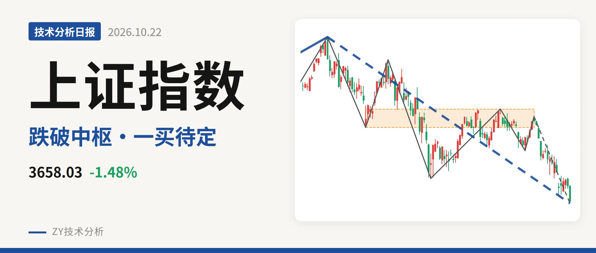
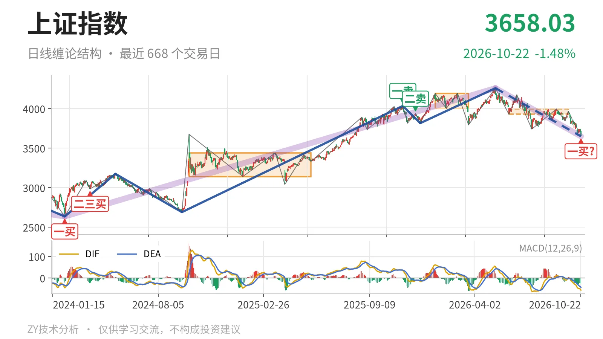
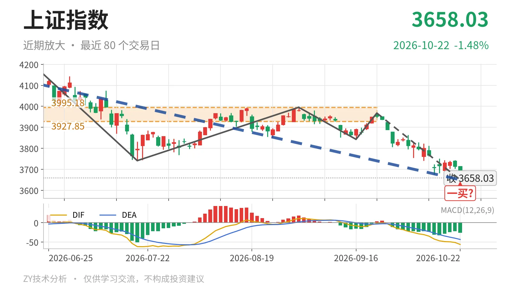

上证指数｜日线中枢失守，暂定一买3649点

最近日线中枢 3927.85—3995.18点，收盘位于中枢之下
一句话：日线下跌段延续，跌破最近中枢，一买仍暂定
📉 走势结构：日线回落段没有结束
日线当前处在5月14日以来的下跌段里。这个日线下跌线段从4258.86点运行至3649.86点，累计跌约14.3%，内部已经走了7笔，线段本身没有结束。更大级别中，2024年2月5日至2026年5月14日的上涨段也还没有结束，5月14日以来的下跌走势却已在延续，因此日线不是单纯的中枢震荡，而是上涨后的回落段。回落段内部已有7笔，说明这里至少是日线线段级别的调整，而不是单笔回撤。

📊 中枢与位置：价格跌破最近中枢下沿
最近的日线笔中枢是6月8日至9月22日，区间3927.85—3995.18点，中轴3961.51点，结构上该中枢尚未完成。最新收盘3658.03点已经跌破中枢下沿，低于下沿约6.9%。与1月14日至3月23日的日线笔中枢4002.78—4190.87点相比，当前中枢位置明显下移。下方还有2024年10月8日至2025年5月27日的日线笔中枢3140.98—3439.05点，以及2021年7月28日至2023年5月9日的线段中枢3312.72—3418.95点，两层结构都在最新价下方，构成更大级别的承接区。
🎯 买卖点：10月22日一买只是暂定
日线笔级别上，10月22日出现一买，价格为3649.86点，所在下跌笔由9月22日延续到10月22日，这一笔还没有写完，所以一买只能按暂定处理。笔不结束，低点就不会固定，后续继续向下则这一买的位置还会变。之前的2025年11月14日一卖4034.08点与2025年12月8日二卖3936.31点，一个比一个低，但5月14日指数又创出4258.86点新高，因此这两个卖点已被后续新高破坏，只对应日线笔级别，不构成线段级别顶部。

⚠️ 背驰：面积未收，仅DIF未新低
同向比较两段日线下跌笔：6月23日至7月20日的下跌笔，绿柱面积289，DIF低点-61.8；9月22日至10月22日的下跌笔截至最新，绿柱面积325，DIF低点-56.3。价格从3741.11点下移到3649.86点，创了线段新低，但DIF低点没有同步创低，具有“新低不新弱”的一部分特征。关键问题是绿柱面积没有收缩，反而由289扩大到325，说明空头力度没有衰竭。最新DIF-56.3、DEA-43.4均在零轴下方，柱体-25.9。由于当前下跌笔仍在延续，日线底背驰还不能成立。
📍 关键位置观察
最近中枢下沿3927.85点已经跌破。后续反抽若回不到3927点上方，则对6月8日至9月22日的中枢构成三卖结构；重新站上3927点上方，下跌更可能只是中枢扩展。上方看3995点附近，下方结构位看3419点附近。当前日线级别偏弱，弱在下跌线段仍在延续、价格位于最近中枢下方、DIF在零轴之下且绿柱面积未收敛；更大级别上涨段仍未破坏。
⚠️ 本文为基于公开行情数据的缠论技术结构记录，由程序自动计算并生成，仅供学习交流，不构成任何投资建议。市场有风险，投资需谨慎。